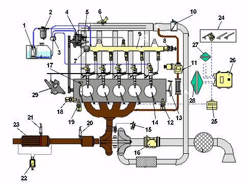
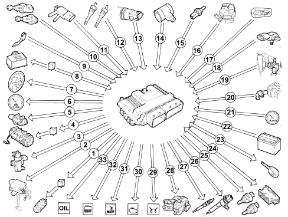

SPECIFICATIONSFUNCTIONThe EDC-16C39 Common Rail system is a high pressure electronic injection circuit for fast, direct injection diesel engines. Its main features are:
Main system functions are essentially as follows:
 1. Auxiliary fuel pump 2. Fuel filter 3. Fuel return manifold 4. Pressure pump 5. Pressure regulator on pump 6. Supercharging sensor 7. Pressure regulator on rail 8. Pressure sensor 9. Rail 10. Throttle body 11. E.G.R. solenoid valve 12. Oil level sensor 13. Timing sensor 14. Heater plug 15. Turbo vane actuator control solenoid valve 16. Flow meter 17. Rpm sensor 18. Water temperature sensor 19. Minimum oil pressure switch 20. Lambda sensor downstream of the catalytic converter 21. Lambda sensor downstream of the filter (DPF) 22. Differential pressure sensor 23. Filter (DPF) 24. Pedal assembly 25. Diagnostic connector 26 Injection control unit 27. Vehicle wiring 28. Engine wiring 29. Swirl throttle control actuator OPERATIONOperating strategiesIntroductionThe Common Rail system makes it possible to carry out two pilot injections before T.D.C. with the advantage of distributing the pressure in the combustion chamber more evenly and reducing the combustion noise typical of direct injection engines. The control unit controls the quantity of fuel injected, regulating the line pressure and injection times. The control unit processes the following information to control the quantity of fuel to inject:
Diagram showing information entering/leaving the control unit  1. Auxiliary electric fuel pump 2. Swirl mechanism 3. VGT solenoid valve 4. Air conditioning compressor 5. E.G.R. solenoid valve 6. Rev counter 7. Cooling fan 8. Heater plugs control unit 9. Accelerator pedal with built in potentiometer 10. Brake - clutch pedal switch 11. Differential pressure sensor 12. Temperature sensor 13. Fuel pressure sensor 14. Flow meter 15. Coolant temperature sensor 16. Fuel temperature sensor 17. Cruise control 18. Excess pressure and air temperature sensor 19. Timing sensor 20. Speedometer 22. Battery 23. FIAT CODE 24. Diagnostic socket 25. Pressure regulators 26. Injectors 27. Heater plugs 28. Throttle solenoid valve 29. Heater plugs warning light 30. Injection warning light 31. Coolant overheating warning light 32. Water in the fuel warning light 33. OIL warning light Self-diagnosisThe control unit self-diagnostic system checks the signals coming from the sensors comparing them with the permitted limits. SIGNALLING OF FAULTS DURING STARTING:
SIGNALLING OF FAULTS DURING OPERATION:
RECOVERY From time to time the control unit defines the type of recovery according to the components that are faulty. The recovery parameters are managed by components that are not faulty. Fuel temperature controlWhen the temperature of the fuel, measured by the sensor on the recirculation manifold, is 80°C, the control unit operates the pressure regulator to reduce the line pressure (it does not alter the injection times). Engine coolant temperature controlWhen the engine coolant temperature is above 105°C, the control unit:
Control of amount of fuel injectedOn the basis of the signals coming from the sensors and the values stored, the control unit:
Idle speed checkThe control unit processes the signals coming from the various sensors and regulates the quantity of fuel injected:
Within certain limits the speed takes the battery voltage into account. Fuel cut-off during decelerationDuring the accelerator pedal release stage, the control unit implements the following logics:
Cylinder balance control up to 3500 rpmAccording to the signals received from the sensors, the control unit controls the torque up to 3500 rpm:
Check on irregular operationThe control unit processes the signals received by the various sensors and corrects the quantity of fuel to inject in order to improve driveability reducing shuddering whilst driving by means of the injector opening time. Exhaust fumes control during accelerationIn order to restrict the fumes during fast transitions, on the basis of the signals received from the accelerator pedal potentiometer, flow meter and the engine speed the control unit limits the amount of fuel to be injected by means of:
Exhaust gas recirculation control (e.g.r.)In accordance with EURO 3 pollution control legislation, on the basis of the engine load and the signal from the accelerator pedal potentiometer, the control unit limits the quantity of intake air, implementing the partial intake of exhaust gases, through:
Maximum torque limit controlAccording to the rpm level, the control unit calculates the following in pre-defined maps:
It compares this minimum values and corrects them with other parameters:
and controls the quantity of fuel to be injected (pressure regulator - injectors). Maximum speed limit controlWhen the engine speed reaches 5000 rpm, the control unit interrupts the operation of the injectors and the supply pressure is consequently reduced. Heater plugs checkThe injection unit, during the following stages:
Air conditioning system start of operation checkThe control unit operates the climate control compressor:
Auxiliary fuel pump checkIrrespective of the rpm, the control unit:
Cylinder position checkDuring each revolution of the engine the control unit recognizes which cylinder is in the explosion stroke and controls the injection sequence at the appropriate cylinder. Pilot injection and main injection advance checkAccording to the signals coming from the various sensors, including the absolute pressure sensor integrated in the control unit itself, the latter determines the optimum injection point, according to an internal map, based on driving comfort and EURO 3 emission limits. Injection pressure closed cycle checkOn the basis of the engine load, determined by processing the signals from the various sensors, the control unit controls the regulator to produce optimum line pressure. Electrical balance checkAccording to the battery voltage, the control unit alters the idle speed:
Vgt variable geometry turbine operationThe control unit processes the signal from the supercharging pressure, at the various engine operating speeds and determines the quantity of fuel to inject:
Fan controlDepending on the temperature of the coolant and the pressure of the refrigerant fluid in the air conditioning system, the control unit controls:
Check on throttle closing when switching offIn order to prevent the engine shuddering when it is switched off, the control unit controls the immediate closure of the inlet throttle. The throttle remains open in all other operating conditions. Cruise control system check (where fitted)Depending on the position of the control lever, the control unit directly controls the quantity of fuel injected to control and maintain the vehicle speed memorized. A warning light on the dashboard activated by the control unit indicates system operation or deactivation status. The cruise control is temporarily disabled:
The cruise control is not disabled when the accelerator is pressed (e.g. to overtake) and automatically restores the vehicle to the set speed as soon as the accelerator is released. The ASR function (antispin) takes precedence over cruise control for safety reasons. |